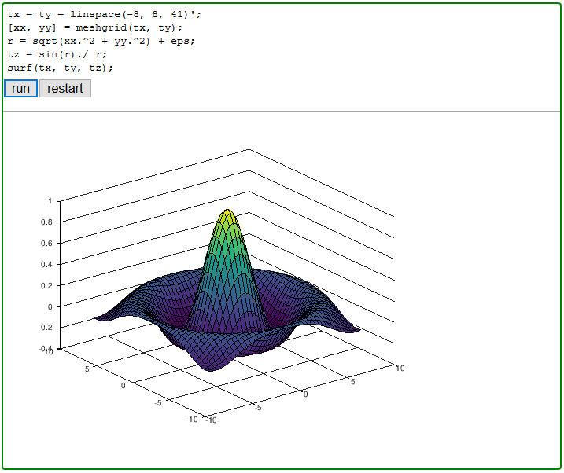
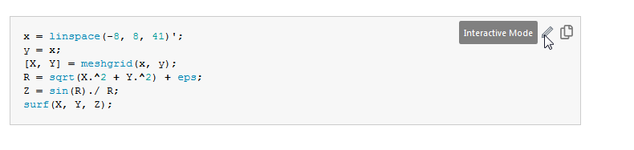
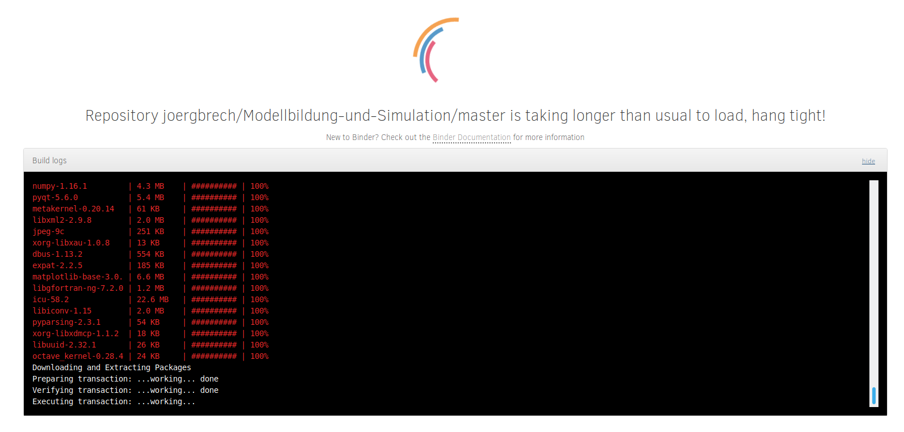

Verwendung dieses Buches
Ganz einfach: Lesen. Es gibt aber ein paar zusätzliche Features, die hier erklärt werden. Es wird auch darauf eingegangen, welche Software für diese features verwendet wird. Das soll nur als Zusatzinformationen dienen und ist für die Verwendung des Online Buches nicht relevant.
Alle Seiten, die Codeblöcke enthalten, haben oben in der Kopfzeile zwei Buttons, einen auf dem "Thebelab" steht, und einen auf dem "Interact" steht.

Beide Buttons bewirken auf unterschiedliche Weise, dass der Matlab-Code in den Code-Blöcken editier- und ausführbar wird. Im Hintergrund wird in einer virtuellen Maschine ein Octave-Kern gestartet. Octave ist ein freier Matlab-Klon, der weitestgehend mit Matlab kompatibel ist.
Es kann unter Umständen schon mal etwas dauern, bis im Hintergrund eine virtuelle Maschine mit Octave gestartet ist. Die Technologie baut auf dem kostenlosen Service Binder auf, sodass auch bei der Ausführung der Code-Blöcke keine hohe Performanz erwartet werden sollte.
Thebelab
Die einfachste Möglichkeit, den Code auf dieser Seite zu editieren und auszuführen ist über Thebelab. Per Klick auf die Taste "run", wird der Code ausgeführt, mit "restart" wird der im Hintergrund laufende Octave-Kernel neu gestartet.

Alternativ kann Thebelab über das Bleistift-Symbol in jedem Code-Block gestartet werden.

Denken Sie daran, dass die Code-Zellen unter Umständen von einander abhängig sein könnten. Wenn zum Beispiel in einer Code-Zelle auf eine Variable x zugegriffen wird, muss diese auch im Workspace zur Verfügung stehen. Ist dies nicht der Fall, haben Sie wahrscheinlich die Code-Zelle weiter oben, in der x initialisiert wird, nicht ausgeführt.
Interact
Der Nachteil der "Interact"-Methode ist, dass man von dieser Seite weggeführt wird. Der Vorteil ist, dass man auf die Inhalte über Jupyter Lab zugreifen kann, eine Art Entwicklungsumgebung die im Browser läuft.


Sie können nicht nur die Code-Blöcke editieren und ausführen, sie können auch neue Dokumente, wie z.B. m-files, erstellen oder hochladen, Dokumente herunterladen und eine Linux-Konsole starten. Das Ganze funktioniert über einen Docker-Container), der über den Binder Service geladen wird.
 Wichtig: Das bedeutet insbesondere, dass alle erstellten Dateien und Änderungen nur temporär sind und nicht über eine Session hinaus erhalten bleiben! Laden Sie erstellte Dateien unbedingt runter, bevor sie das Fenster schließen, oder noch besser, erstellen Sie Dateien offline auf Ihren Computer und laden Sie sie hoch, wenn Sie sie in einer interaktiven Session verwenden möchten.
Wichtig: Das bedeutet insbesondere, dass alle erstellten Dateien und Änderungen nur temporär sind und nicht über eine Session hinaus erhalten bleiben! Laden Sie erstellte Dateien unbedingt runter, bevor sie das Fenster schließen, oder noch besser, erstellen Sie Dateien offline auf Ihren Computer und laden Sie sie hoch, wenn Sie sie in einer interaktiven Session verwenden möchten.
Dateien erstellen
In Jupyter Lab ("Interact" Button), lassen sich Dateien mithilfe des Launchers erstellen. Man kann aber auch Dateien mit der Thebelab Funktionalität erstellen. Wenn ein Code-Block mit der Zeile %%file myfile.m beginnt, wird der folgende Inhalt des Blocks in eine Datei myfile.m geschrieben. Dies ist insbesondere nützlich um Funktionen zu schreiben, da Funktionen in Matlab immer in eigenen Dateien gespeichert werden müssen, oder erst am Ende eines Skriptes stehen dürfen.
%%file hello_world.m
function hello_world()
for i=1:5
disp('Hello World, how is your day?')
end
run hello_world
Auch hier gilt, dass nur temporäre Dateien angelegt werden können, die die aktuelle Session nicht überleben.
Unit Testing
Unit Testing ist aus moderner Software-Entwicklung nicht mehr wegzudenken. Sobald ein Software-Paket etwas größer wird und aus einer Vielzahl von Modulen, Bibliotheken, Funktionen und Skripten besteht, sollte regelmäßig getestet werden, ob die Module noch so funktionieren wie erwartet. Unit Tests sind im wesentlichen kleine Programme, die diese Module auf ihre Funktionsfähigkeit prüfen. Ein weit verbreitetes Programmierparadigma besagt sogar, dass man erst die Unit Tests schreiben soll, bevor man das Modul erstellt.
Unit Tests sind nicht Teil dieses Kurses und es wird nicht von Ihnen verlangt, dass Sie Unit Tests für Ihre Programme schreiben. Für die meisten Übungsaufgaben auf dieser Seite müssen Matlabfunktionen erstellt werden. Für diese Übungsaufgaben werden bereits fertige Unit Tests zur Verfügung gestellt, mit der die eigens erstellten Funktionen auf ihre Richtigkeit überprüft werden können.
Unit Tests auf dieser Seite ausführen
Sowohl Matlab als auch Octave bieten Werkzeuge für Unit Tests an. Leider sind die jeweiligen Toolboxen von Octave und Matlab nicht kompatibel zu einander. Daher wird an dieser Stelle MOxUnit verwendet. MoXUnit ist ein freies open source unit testing framework, das sowohl mit Matlab als auch Octave funktioniert.
Wenn für eine Übungsaufgabe ein Unit Test zur Verfügung steht, dann wird das an der entsprechenden Stelle explizit erwähnt. Angenommen die Übungsaufgabe besteht darin, eine Funktion fac zu schreiben, die die Fakultät $n!$ einer Zahl $n$ berechnet. Der Einfachheit halber schreiben wir einen Wrapper für die von Matlab zur Verfügung gestellt Funktion factorial, ungeachtet dessen, dass es dem Zweck der Übungsaufgabe nicht so richtig gerecht wird:
%%file fac.m
function r = fac(n)
% wrapper for Matlabs factorial function
r = factorial(n);
Die bereitgestellten Unit Tests befinden sich in der Datei test_fac.m. Diese Tests überprüfen, ob die Funktion sich so verhält wie erwartet. Der Test wird mit folgendem Befehl ausgeführt:
moxunit_runtests test_fac.m
Aha, es gab also sechs Tests, und die werden von fac, bzw. der von Matlab zur Verfügung gestellten Funktion factorial, alle erfüllt. Super!
Das war allerdings auch etwas geschummelt. Wir probieren eine etwas andere Implementierung der Funktion:
%%file fac.m
function r = fac(n)
% calculates the factorial of the input n
r = prod(1:n);
Mal sehen, ob immer noch alle Tests durchlaufen:
moxunit_runtests test_fac.m
Ok, drei der Tests sind erfolgreich, drei schlagen fehl. Die Test Suite gibt Auskunft darüber, welche der Tests fehlschlagen. Die Ausgabe
suite: 6 tests
...FFF
--------------------------------------------------bedeutet, dass die letzten drei Tests fehlgeschlagen sind. Zusätzlich gibt jeder fehlgeschlagene Test Informationen darüber aus, welches Verhalten erwartet wurde und welches tatsächlich eingetroffen ist. Manchmal sind diese Ausgaben etwas kryptisch, dann lohnt es sich einen Blick in die Implementierung der Tests zu werfen. Mit dem Befehl type lässt sich der Inhalt einer Datei in Matlab wiedergeben. Das können wir benutzen um uns die sechs Tests in test_fac.m genauer anzuschauen:
type test_fac.m
Aha! Prinzipiell funktioniert die Funktion für nicht-negative ganzzahlige skalare Eingaben. Der Test erwartet aber zusätzlich, dass Fehler ausgegeben werden, wenn die Eingabe negativ oder nicht ganzzahlig ist. Außerdem soll die Funktion für matrixwertige Eingaben funktionieren. Es wird erwartet, dass die Fakultät elementweise berechnet wird.
Unit Tests offline ausführen.
Wenn Sie möchten, können Sie die Unit tests auch offline ausführen. Dazu müssen Sie die jeweilige Test Suite, in diesem Fall test_fac.m, herunterladen und das MOxUnit framework lokal installiert haben.
- Installieren Sie MOxUnit.
- Laden Sie sich den entsprechenden Unit Test von dieser Seite herunter. Wenn die Funktion, die getestet werden soll,
myFunctionheißt, ist der Unit Test in der Dateitest_myFunction.mgespeichert. Sie können sich mit dem Befehltype test_myFunction.mden Inhalt der Datei wiedergeben lassen, oder mit dem "Interact"-Button eine interaktive Session starten und die Datei per Mausklick herunterladen. - Führen Sie den Unit Test mit
moxunit_runtests test_myFunction.maus.
Troubleshooting
Falls es Probleme oder Verbesserungsvorschläge gibt, freue ich mich über eine Email oder noch besser, über einen Eintrag im Issue tracker auf Github.
Bekannte bzw. erwartete Probleme:
Wenn ich auf
runklicke, steht da nurWaiting for kernel...und nichts passiert.
Lösung: Geduld. Wahrscheinlich wurden gerade Änderungen an diesem Buch vorgenommen und Sie sind die erste Person, die seitdem interaktive Inhalte nutzen will. Damit haben sie ein rebuild des binder image getriggert. Das kann schon mal eine Weile dauern. Dasselbe gilt für die "Interact" Funktion. Hier erhält man aber ausführlichere Informationen über eine Konsolenausgabe beim Start.

Wenn ich einen Code-Block starte, erhalte ich eine seltsame Fehlermeldung, die nicht nach Octave oder Matlab aussieht.
Lösung: Ab und zu wird der Code fälschlicherweise an einen Python-Interpreter übergeben. In solchen Fällen hilft es, die Seite neu zuladen. Vergessen Sie aber nicht, Ihren eingetragenen Code vorher zu kopieren, damit er beim Neuladen nicht abhanden kommt!
Ich bin mir sicher, dass ich die Übungsaufgabe richtig bearbeitet habe, aber der Unit Test gibt Fehler aus.
Lösung: Möglicherweise wurde für die Bearbeitung der Übungsaufgabe Matlab-Code geschrieben, der nicht mit Octave kompatibel ist. In diesem Fall sollte es schon helfen, den Unit Test lokal in der eigenen Matlab Installation laufen zu lassen.
Beim Ausführen des unit tests im interaktiven Modus (Thebelab) erhalte ich folgende Fehlermeldung:
moxunit_runtests test_fac.m
error: Parameter not recognised or file missing: test_fac.m
error: called from
moxunit_runtests>get_params at line 365 column 21
moxunit_runtests at line 72 column 11
Das ist ein bekanntes Problem, an dem gerade gearbeitet wird. Die einfachste Lösung ist einfach die "interact"-Methode statt der "Thebelab"-Methode zu verwenden. Ein alternativer Workaround ist, den relativen Pfad der aktuellen Seite explizit im Befehl zu verwenden. Dieser setzt sich zusammen aus content sowie dem akutellen Unterordner dieser Seite, der sich aus der url ablesen lässt. Für diese Seite lautet er 00_einleitung. Der Befehl
moxunit_runtests content/00_einleitung/test_fac.m
sollte funktionieren.